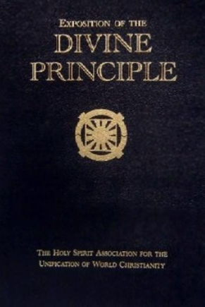
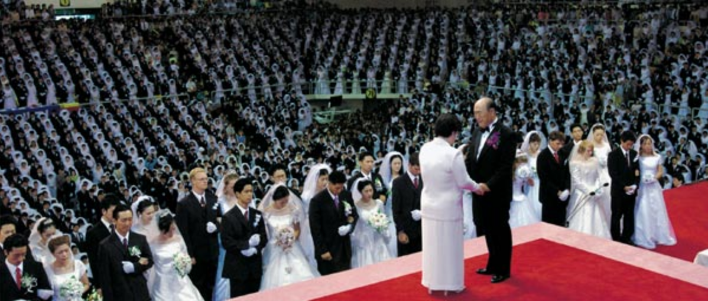

Home
In this section, we will analyze the Unification Church using the family resemblance model (FRM) proposed by Ludwig Wittgenstein. The FRM suggests that for something to be considered a religion, it does not need to encompass specific required aspects, but instead must overlap with aspects of other accepted religions. Through this approach, we argue that the Unification Church qualifies as a “valid” religion because it overlaps with and shares traits found in many accepted religions, in areas like belief, texts, rituals, morality, and community.
Firstly, the Unification Church has many central beliefs, similar to other accepted religions like Christianity, Islam, and Judaism. In these religions, there is a core monotheistic belief in one God, and the purpose of humanity is to reach salvation and restore humanity to God. While the Unification Church achieves this by removing sinful lineage and returning to God's lineage through mass marriage ceremonies, many other religions also aim to save humanity through different means, like liberation in Buddhism or obedience to God in Islam. While the method of achievement is different, the idea behind it is similar, connecting the Unification Church with others through the theme of salvation.
From the central text perspective, similar to religions like Christianity, Islam, Judaism, Buddhism, Hinduism, etc., the Unification Church follows a central text and rituals that include reading, interpreting, and following this sacred text. Similar to other new religious movements like Mormonism, the Unification Church also has an additional interpreted text called the Divine Principle, which is supplementary to the Bible and is believed to be a corrected interpretation by the founder and prophet Sun Myung Moon. These texts aim to explain moral codes, reality, and human purpose. In all of these religions, a text is a central part of practice and identity, and the Unification Church follows this same pattern.

The Unification Church also includes rituals and sacred practices. While these rituals are different, the idea of having sacred rituals is a key part of many religions. The Unification Church includes unique rituals like mass weddings, prayer and worship, and purification rituals. These traditions and beliefs are central to the Unification Church, and while they are unique from other religions, the idea that they have central beliefs and rituals highlights similarities between the church and other religions.
Additionally, like many other religions, the Unification Church has moral codes that are strictly followed. Parts of these moral codes are similar to those of other religions, but also include some unique parts. These include a strong emphasis on sexual purity, marriage and family structure, and obedience to God. There is a clear ethical framework created by the church that guides the actions and morality of its followers, similar to many other religions.

Finally, the Unification Church provides a community for its members, as other religions do. In the Unification Church, members who may have never met before refer to each other as brother and sister, showing the tight-knit structure created by the religion. The focus on family structure and purifying lineage through marriage helps create this community, where members become part of a shared group through participation in the church.
Overall, the Unification Church shares many traits with widely followed religions across the world. These shared traits include beliefs about God, sacred texts, rituals, moral systems, and community structure. While the church may differ in some practices, like mass weddings, it still shares many overlapping traits with other recognized religions. We argue that the Unification Church is therefore a religion according to the FRM due to this overlap.